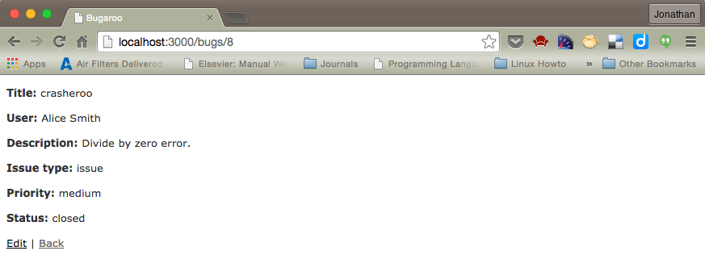
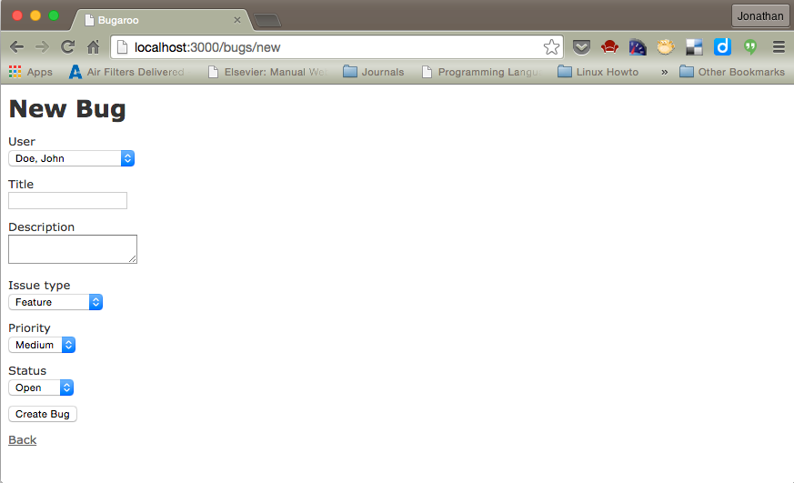
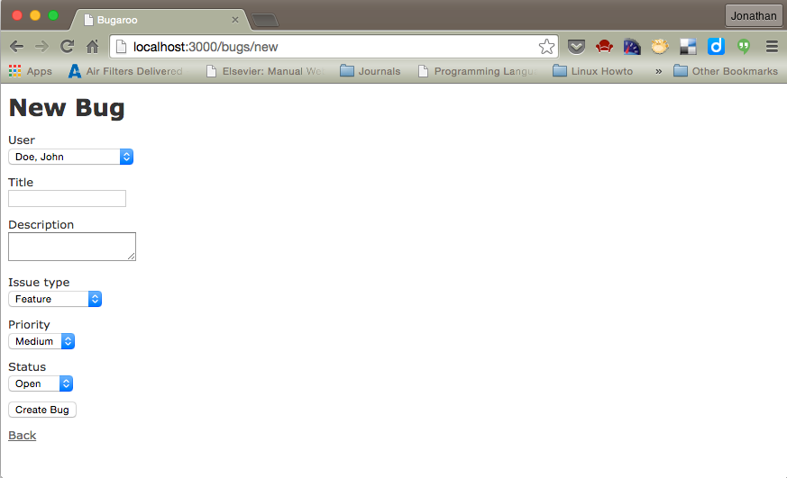

CIS 658 |
Bug Tracking |
Winter 2020 |
You may work in pairs on this assignment.
This assignment was originally designed my Prof. Engelsma
Part 1: Bug Overflow – Modeling Bugs
In this first part of the assignment you will create a simple web application using the Rails framework. In particular, we will be working on a sequence of homework assignments that will iteratively build a bug tracking application we will call Bug Overflow. Use a recent version of Rails and Ruby.
Iteration #1
In this first iteration, use what you have learned in class to create a single model called “bug” that models the bugs in our application. Later we will add additional models to the app. Bugs are represented with this information:
- Title: a short descriptive title summarizing the problem.
- Description: a longer piece of text which describes the details of the problem.
- Issue_type: has three possible values: issue, enhancement, feature.
- Priority: priority of the issue with three possible levels: low, medium, high.
- Status: the current status of the bug with three possible settings: open, closed, monitor.
Use rails scaffolding to generate the basic screens for managing bugs (list of all bugs, show bug, edit bug, and delete bug).
Using the TDD approach outlined in lecture, write the automated tests and then implement the following model requirements:
- Title and description cannot be blank whenever a bug is created or edited.
- Issue_type, priority and status must have valid values (you should represent these values as enumerated types.)
- The default value of issue_type should be feature.
- The default value of priority should be medium.
- The default value of status should be open.
Do not pay any attention to styling at all in this point (e.g. you need not modify the generated CSS/SCCS files.) Your final product should look like the screenshots inserted below.,



Part 2: Bug Overflow – Associating Users With Bugs
In this part of the assignment you will extend the Bug Overflow application that you started in the previous section by adding a User model to the app and associating users and bugs.
Iteration #2
Users typically report bugs, so we need to have a model for users. In this iteration of the application, add an additional model for users. For each user you should have the following fields:
- lname: user’s last name.
- fname: user’s first name.
- email: user’s email address.
- thumbnail: a reference to the user’s thumbnail image.
Use rails scaffolding to rapidly generate the model and basic screens for managing users. (list of all users, show user, edit user, and delete user).
Using the TDD approach outlined in lecture, write the automated tests and then implement the following model requirements:
- lname, fname, email cannot be blank whenever an author is created or edited.
- email must be unique and be a valid format for an email address.
- thumbnail must end with either .png, .jpg, or .gif. It is ok to leave the thumbnail field blank.
Formally model the association between users and bugs so that every bug is owned by a single user, and a single user may own many bugs. In addition, make sure you modify the appropriate bug views so that a user can be specified when a bug is entered/updated, or shown in the bug listing or bug detail views. Make sure that you present users as "Firstname Lastname" when they are shown in views.
Do not pay any attention to styling at all in this point (e.g. you need not modify the generated CSS/SCCS files.) Your final product should look like the screenshots inserted below. Your user views (not shown below) should also be fully functional.
 

Deliverables:
Either, (1) provide the instructor a demo of your working app in class, or (2) post a link to your deployed app (e.g., on Heroku)
Updated Thursday, 6 February 2020, 11:49 AM